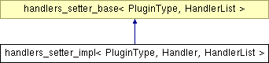

handlers_setter_impl< PluginType, Handler, HandlerList > Struct Template Reference
#include <handler_helpers.hpp>
_map" border="0" alt="">
List of all members.
Detailed Description
template<typename PluginType, typename Handler, typename HandlerList>
struct handlers_setter_impl< PluginType, Handler, HandlerList >
Here we can partial specialize for Handler such that the right hook will be set.
The documentation for this struct was generated from the following file: